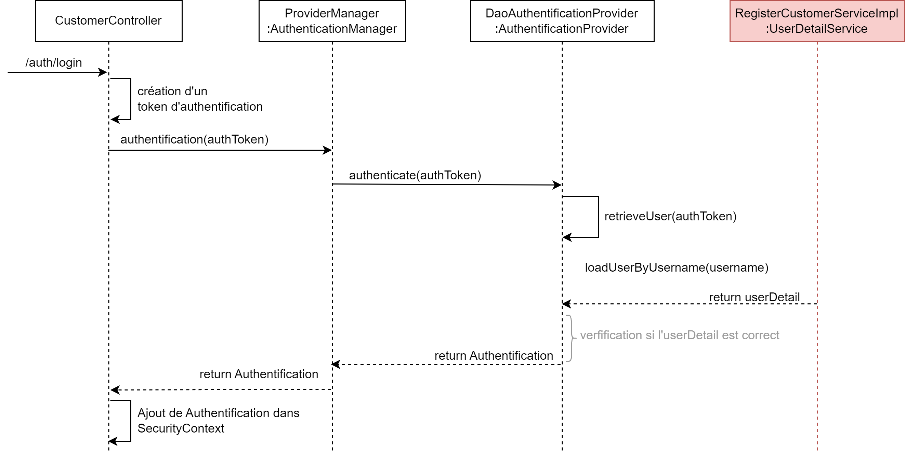

Contrôleur
Il recoit les requête WEB et transmet l'information à la partie métier.
API
Chaque point d'entrée commence par customer suivi de
/registrationpour créer un nouveau compte utilisateur/loginpour se connecter/update/{id}pour mettre à jour son compte (principalement le mot de passe)/restrictedqui est une page accessible uniquement si on est authentifié
Attributs
@RestController
@RequestMapping("/customer")
public class CustomerController {
// Fourni par le Bean développé dans SecurityConfig
@Autowired
private AuthenticationManager authenticationManager;
private RegisterCustomerService registerCustomerService;
...
}
S'enregistrer
L'enregistrement d'un nouvel utilisateur ne pose pas de problème particulier. Nous appelons simplements le service en lui fournissant le DTO.
@PostMapping("/register")
public ResponseEntity create(@RequestBody RegisterCustomerRequestDTO requestModel) {
try {
// Appel service métier en fournissant le DTO
registerCustomerService.register(requestModel);
return ResponseEntity.status(HttpStatus.CREATED).body("New account created");
} catch (RegistrationMailAlreadyExist | RegistrationPhoneNumberAlreadyExist | RegistrationMDPmatch e) {
return ResponseEntity.status(HttpStatus.FORBIDDEN).body(e.getMessage());
}
}
Se connecter
Néanmois la connexion est un peu plus complexe à mettre en oeuvre. Elle se traduit par le code suivant où nous devons
- Créer un token d'authentification avec les informations founies par l'utilisateur. Pour rappel, la classe en charge de l'authentification est
AuthenticationManagerest son unique méthode accepte un objet de typeAuthentication(e.gUsernamePasswordAuthenticationToken). - Demander au gestionnaire d'authentification
AuthenticationManagersi les idenfiants sont corrects - Mettre à jour le
SecurityContextavec les informations du client maintenant authentifié
@PostMapping("/auth/login")
public ResponseEntity<String> login(@RequestBody LoginRequestDTO loginDTO) {
try {
/* Créer un objet de type Authentication */
UsernamePasswordAuthenticationToken token = new UsernamePasswordAuthenticationToken(loginDTO.getEmail(),
loginDTO.getPassword());
/* Appeler l'authenticationManager en passant l'objet précédent */
Authentication auth = authenticationManager.authenticate(token);
/* Ajouter l'authentification au SecurityContext */
SecurityContextHolder.getContext().setAuthentication(auth);
return ResponseEntity.status(HttpStatus.ACCEPTED).body("User connected");
} catch (AuthenticationException e) {
return ResponseEntity.status(HttpStatus.FORBIDDEN).body(e.getMessage());
}
}
Diagramme de séquence
Le diagramme de séquence simplifié reprend les étapes réalisées en interne par le framework Spring pour réaliser une demande d'authentification

- L'utilisateur effectue une requête sur
/auth/login - La première instruction dans le Contrôleur crée un token d'authentification
- Les informations saisies sont envoyées à un
AuthenticationManager - Qui retransmets les informations à un objet de type
AuthentificationProvider AuthentificationProviderva :- Appeler la méthode
retrieveUserqui à partir du token d'authentification va retourner un objet de typeUserDetail. L'UserDetailest l'objet Spring qui fournit des informations de base sur l'utilisateur. - Appeler la méthode
loadUserByUsernamesur un objet de typeUserDetailService. Et, précédement nous avons créer notre propre implémentationRegisterCustomerServiceImpl - Ainsi, cette méthode (dont nous avons définie le fonctionnement juste avant) va aller chercher en base de données l'utilisateur et le renvoyer sous sa forme
UserDetail
- Appeler la méthode
- Nous avons donc récupérer notre utilisateur (il existe bien !).
AuthentificationProviderva donc crée un objet de typeAuthentificationen précisant l'attributauthenticated = true - Ce dernier objet et remonté jusqu'au Contrôleur qui va l'ajouter dans le
SecurityContext
Page avec restriction
Il n'y a aucune indication dans le Contrôleur qui informe que la page necessite une authentification.
La gestion a été définie dans la classe SecurityConfig.
@GetMapping("/restricted")
public String retricted() {
return "Welcome to Restricted page";
}